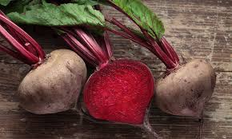
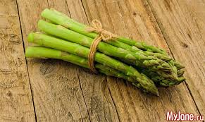

Редис — съедобное растение и выращивается как овощ во многих странах мира. Его название происходит от лат. radix — корень. В пищу обычно употребляют корнеплоды, которые имеют диаметр от 2,5 см и покрыты тонкой кожей, окрашенной в красный, розовый или бело-розовый цвет.

Свёкла обыкнове́нная — однолетнее, двулетнее или многолетнее травянистое растение; вид рода Свёкла семейства Амарантовые. Культивируется на больших площадях повсеместно. В юго-западных областях России, в Белоруссии и на Украине растение называют бура́к, или буря́к.

Редька посевная, или Редька огородная — однолетнее или двулетнее травянистое растение, вид рода Редька семейства Капустные.

Спа́ржа — род растений семейства спаржевые, рассеянных по всему свету, преимущественно в сухом климате. Наиболее распространённый вид — спаржа лекарственная. Одни виды спаржи — травы, другие — полукустарники, развивающие подземное корневище и надземные более или менее ветвистые стебли, у многих видов ползучие.

Артишок - многолетняя садово-огородная овощная культура из рода Артишоков семейства Астровых. Нераскрывшиеся бутоны растения («корзинки», «головки», «шишки») съедобны и наряду с реве́нем и спа́ржей относятся к деликатесным овощам[2]. Отдалённо напоминают вкус молодого грецкого ореха.